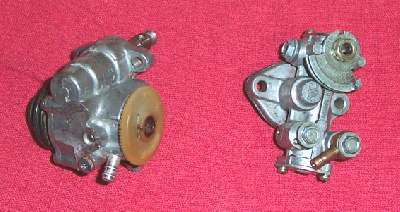

On a two-stroke with oil injection (often called autolube), a pump feeds oil from a separate tank into the engine. The tank level should fall steadily as you ride. If it stays the same over a few days of riding, the engine is probably getting no oil. A two-stroke without oil can seize within minutes, locking the rear wheel. Causes include a blocked or kinked oil line, air in the line, a broken pump cable, a failed pump drive, or a blocked tank vent.
Is it safe to ride?
No. Do not ride until oil delivery is confirmed. If you must move the bike in an emergency, premix oil in the fuel at the ratio your manual gives.
Quick checks first
- Mark the tank level and check it after a known distance.
- Is the oil line connected at both ends, with no kinks?
- Is the pump cable connected and does the pump lever move when you open the throttle?
- Is the tank cap vent clear?
- Most pumps have a small bleed screw on the side. If there is none, loosen the oil inlet hose bolt to bleed.
- The cable must be set so the pump delivers more oil as the throttle opens.
Diagnose it step by step
1Are you sure the level does not fall? Mark it with tape, ride a short known distance, and check with Check the engine oil level (tank section).
- It falls slowly but steadily: normal use. Check the rate against the manual with a workshop if unsure.
- It does not fall at all: go to step 2.
2Follow the oil line from tank to pump to engine. Is it kinked, crushed, off its fitting, or full of air bubbles?
- Yes: refit or replace the line. Air in the line must be bled out; see step 5.
- No: go to step 3.
3Engine off, open the throttle. Does the pump lever move with the throttle?
- No: the pump cable is broken, loose or disconnected. Repair it, and have the setting checked. Go to step 5.
- Yes: go to step 4.
4Is the tank vent (often in the cap) blocked?
- Yes: clean it. A blocked vent makes a vacuum that stops oil flowing.
- No: the pump or its drive may have failed. Go to step 5.
5. Workshop: Check the two-stroke oil pump and lines. The workshop bleeds air, checks pump output against the manual and sets the cable.
6Has the engine been ridden without oil?
- Yes: do Test engine compression. Low or scratching sounds mean piston and cylinder damage; go to Assess the top end (cylinder, piston, valves).
- Engine tightened up or seized: Engine has seized or locked up.
Causes, most likely first
| Cause | How to confirm | Fix |
|---|---|---|
| Kinked or disconnected oil line | Visual check | Refit line, bleed air |
| Air in the line | Bubbles in clear line | Check the two-stroke oil pump and lines |
| Pump cable broken or loose | Lever does not move | Check the two-stroke oil pump and lines |
| Blocked tank vent | Vacuum when cap opened | Clean vent |
| Failed pump or drive | Everything else correct | Check the two-stroke oil pump and lines |
| Air in the pump after the tank ran dry | Bubbles from the bleed screw | Bleed air from a two-stroke oil pump |
| Pump cable set wrongly | Pump marks do not align at the throttle position in the manual | Set the oil pump cable so it follows the throttle |